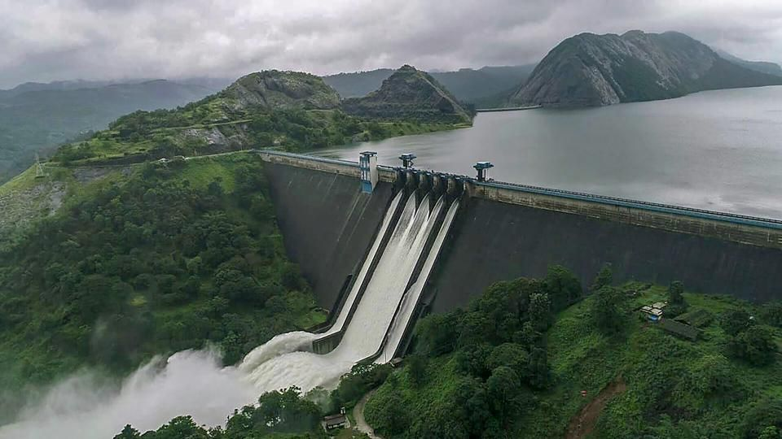
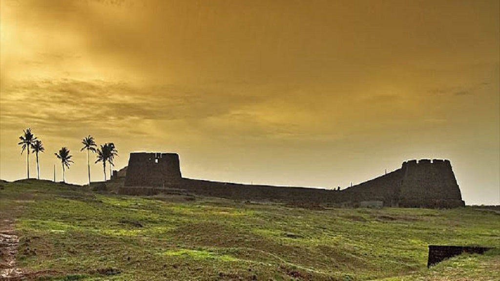
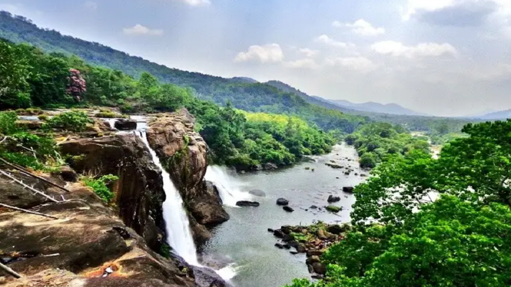
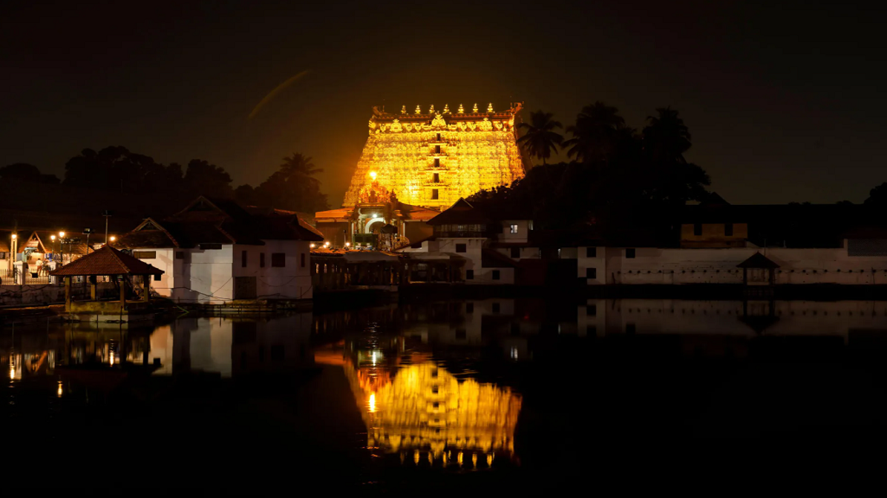

ALAPPUZHA
Referred to as the Venice of the East, Alappuzha has always enjoyed an important place in the maritime history of Kerala...

IDUKKI
Idukki which lies in the Western Ghats of Kerala. Idukki is the spice garden of Kerala...


THRISSUR
Thrissur is known as the cultural capital of Kerala, and the land of Poorams...

TRIVANDRUM
A gracious and evergreen city spread over seven hills, Thiruvananthapuram, capital of Kerala, is steeped in history and culture...